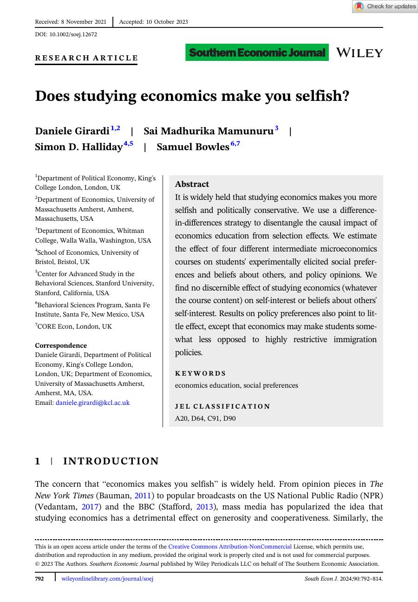

Behavioral and experimental economics
Does studying economics make you selfish?
D. Girardi, S. Mamunuru, Simon D. Halliday, and Samuel Bowles. Southern Economic Journal, 2023.
A study of whether economics education changes students' social preferences and political beliefs. The paper uses variation across intermediate microeconomics courses to examine whether exposure to economics makes students more self-interested.
The preview image gives visitors a sense of the article as a published object, while the summary explains why someone might want to read it.